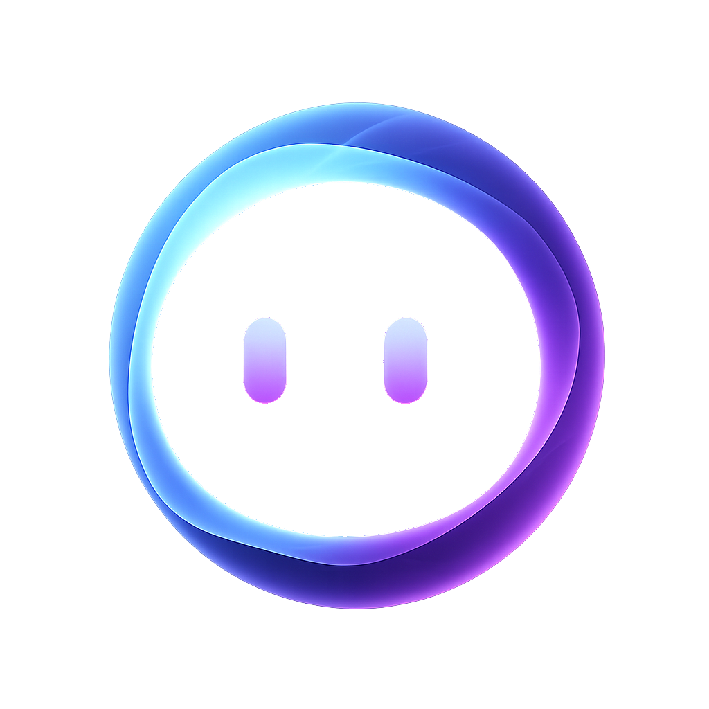

Nox ist ein vollkommen lokaler, sprachgesteuerter KI-Assistent für Windows. Alle Modelle laufen auf deiner Hardware. Keine Daten verlassen deinen Rechner. Keine Konten. Keine Telemetrie. Nur du und deine KI.

Sechs Kernmodule. Alle lokal. Alle offline.
Wake-Word-Erkennung via openWakeWord. Spracherkennung mit faster-whisper. Antworten gesprochen durch Piper TTS. Sag „Hey Nox" und sprich natürlich.
Nox sieht, was du siehst. Aktive Fenster, UI-Elemente, OCR-Fallback. Antworten, die deinen aktuellen Kontext verstehen – ohne dass du ihn manuell übergeben musst.
Token-für-Token Streaming via WebSocket. Markdown, Code-Blöcke, strukturierte Antworten. Genau wie ein moderner KI-Chat – nur dass alles auf deinem Rechner passiert.
Nox merkt sich Gespräche und fasst sie zusammen. SQLite-basiertes lokales Gedächtnis mit konfigurierbarer Aufbewahrungszeit. Nichts wird synchronisiert.
Guided Setup: Ollama-Installation, Modell-Auswahl, GPU-Check, Mikrofon-Test, Wake-Word-Kalibrierung. Alles in einem geführten Wizard. Kein Vorwissen nötig.
Nox kann Werkzeuge aufrufen: Kontextsuche, Notizen speichern, Uhrzeit abfragen. Erweiterbar um eigene Tools. Fallback-Parsing wenn das LLM kein natives Tool-Calling unterstützt.
Keine Cloud-APIs. Keine Telemetrie. Keine versteckten Verbindungen.
Nox führt dich durch den gesamten Prozess. Kein Vorwissen nötig.